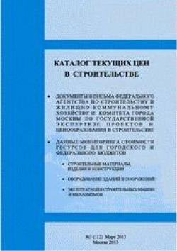
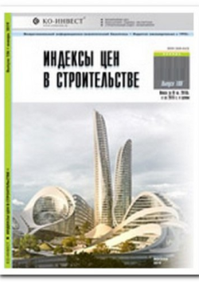
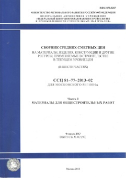
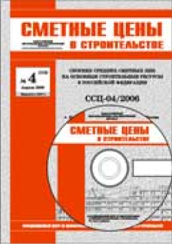

При формировании начальной (максимальной) цены торгов при подготовке конкурсной документации, при
составлении сметной документации и осуществлении взаиморасчетов в городе Москве на основании федеральных
единичных расценок (ФСНБ) с использованием базисно - индексного метода в настоящее время используются:
В городе Москве наибольшее распространение получили сборники:
Каталог текущих цен в строительстве (Стройинформресурс)

Ежемесячный сборник текущих рыночных отпускных и сметных цен, выпускаемый с 2003 года.
Каталог включает в себя информацию о средних текущих оптовых и сметных ценах на ресурсы,
используемые в строительстве - строительные материалы, изделия и конструкции, оборудование,
эксплуатацию строительных машин и механизмов, а также индексы пересчета сметной стоимости.
Сметные цены на ресурсы приведены в базисном, на 1 января 2000 г., и текущем уровнях цен.
Цены в каталоге предназначены для определения сметной стоимости строительно-монтажных
(ремонтно-строительных) работ и применяются при составлении сметной документации при
строительстве,
капитальном ремонте, реконструкции предприятий, зданий и сооружений в Москве.
Кодировка ресурсов каталога привязана к сметно-нормативной базе ФСНБ в редакциях 2009, 2014
годов и
редакции 2014 года с изменениями, вступившими в силу от 01 января 2015 года. Приложение к
каталогу
содержет привязку ресурсов (кодировку и базовые сметные цены) к сметной базе ТСН.
Структура каталога привязана к структуре ФСНБ. Номенклатура ресурсов (более 70 тыс. в печатной
версии и 150 тысяч в электронной) позволяет рассчитывать сметы в текущем уровне цен на любой
месяц..
Каталог текущих цен в строительстве (Стройинформресурс)

Ежеквартальный сборник, с информацией о динамике текущих и прогнозных цен на здания, сооружения,
строительные работы, материалы, конструкции, технологическое оборудование по регионам России.
Основное назначение - использование при обосновании сделок с имуществом, при переоценке основных
фондов, оценке инвестиционных проектов, проведении подрядных торгов С использованием сборник
производится:
-оценка инвестиционных проектов;
-оценка стоимости незавершенного строительства; переоценка основных фондов;
-оценка рыночной стоимости недвижимости;
-определение базы для исчисления налога на недвижимость;
-определение базы для исчисления амортизации;
-определение рыночной стоимости имущества и размеров ущерба для целей страхования;
-и другие задачи
-оценка стоимости строительной продукции на различных этапах взаимодействия заказчика и
подрядчика
Сборник средних сметных цен на материалы, изделия, конструкции и другие ресурсы, применяемые в
строительстве в текущем уровне цен для Московского региона (В 6-ти частях)

Ежеквартальный сборник, с информацией о динамике текущих и прогнозных цен на здания, сооружения,
строительные работы, материалы, конструкции, технологическое оборудование по регионам России.
Основное назначение - использование при обосновании сделок с имуществом, при переоценке основных
фондов, оценке инвестиционных проектов, проведении подрядных торгов С использованием сборник
производится:
-оценка инвестиционных проектов;
-оценка стоимости незавершенного строительства; переоценка основных фондов;
-оценка рыночной стоимости недвижимости;
-определение базы для исчисления налога на недвижимость;
-определение базы для исчисления амортизации;
-определение рыночной стоимости имущества и размеров ущерба для целей страхования;
-и другие задачи
-оценка стоимости строительной продукции на различных этапах взаимодействия заказчика и
подрядчика
Сметные цены в строительстве (КЦЦС)

Ежеквартальный сборник, с информацией о динамике текущих и прогнозных цен на здания, сооружения,
строительные работы, материалы, конструкции, технологическое оборудование по регионам России.
Основное назначение - использование при обосновании сделок с имуществом, при переоценке основных
фондов, оценке инвестиционных проектов, проведении подрядных торгов С использованием сборник
производится:
-оценка инвестиционных проектов;
-оценка стоимости незавершенного строительства; переоценка основных фондов;
-оценка рыночной стоимости недвижимости;
-определение базы для исчисления налога на недвижимость;
-определение базы для исчисления амортизации;
-определение рыночной стоимости имущества и размеров ущерба для целей страхования;
-и другие задачи
-оценка стоимости строительной продукции на различных этапах взаимодействия заказчика и
подрядчика
Ежеквартальные
Примечание: В настоящее время ФАС России рассматривает дело о нарушении антимонопольного
законодательства ФАУ «ФЦЦС», Некоммерческой организацией «Национальная ассоциация сметного
ценообразования и стоимостного инжиниринга» и другими организациями по вопросу применения и
распространения ряда изданий, в том числе «Индексов пересчета сметной стоимости
строительно-монтажных работ, выполняемых с привлечением средств федерального бюджета в
Московском регионе ….»